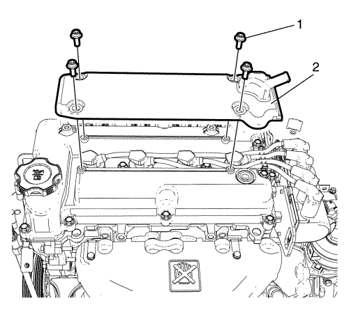

Sustitución de la tapa de los árboles de levas
Procedimiento de desmontaje
- Abra el capó.
- Extraiga el colector de admisión superior. Consultar Sustitución del colector de admisión superior .
- Extraiga el perno de retención (2) del solenoide de purga del cartucho a la cubierta del árbol de levas.
Nota: No es necesario desenchufar los conectores del solenoide puro del cartucho.
- Reposicione y aparte el solenoide/tubo flexible de purga del cartucho (1) de la cubierta del árbol de levas para facilitar el desmontaje de la cubierta del árbol de levas.
- Retire el tubo de ventilación positiva del cárter del cigüeñal. Consultar Sustitución del tubo/tubería/tubo flexible de ventilación positiva del cárter del cigüeñal .

- Extraiga los pernos de retención (1) de la cubierta del árbol de levas superior a la cubierta del árbol de levas.
- Retire la tapa superior del árbol de levas (2).
- Desmonte la bobina de encendido. Consultar Sustitución de la bobina de encendido .
- Extraiga el clip (2) y los pernos (1).
- Retire los 12 tornillos (1, 2).
- Desmonte la cubierta del árbol de levas (3).
Procedimiento de montaje
Nota: Asegúrese de que las superficies de sellado de la culata y la cubierta del árbol de levas estén limpias.
- Monte una junta (4) de la cubierta del árbol de levas y arandelas aislantes NUEVAS.
- Monte la cubierta del árbol de levas (3).
Precaución: Consulte Precaución con las fijaciones en la sección Prólogo
- Introduzca los 12 pernos (1, 2) y apriételos a 10 N·m (89 lib. pulg.).
- Introduzca el clip (2) y apriete los pernos (1) a 10 N·m (89 lib. pulg.).
- Monte la bobina de encendido. Consultar Sustitución de la bobina de encendido .
- Monte la cubierta del árbol de levas superior (2).
- Introduzca los pernos de retención (1) de la cubierta del árbol de levas superior a la cubierta del árbol de levas y apriételos a 10 N·m (89 lib. pulg.).
- Monte el tubo de ventilación positiva del cárter del cigüeñal. Consultar Sustitución del tubo/tubería/tubo flexible de ventilación positiva del cárter del cigüeñal .
- Monte el solenoide (1) de purga del cartucho a la cubierta del árbol de levas.
- Introduzca el perno (2) y apriételo a 9 N·m (80 lib. pulg.).
- Monte el colector de admisión superior. Consultar Sustitución del colector de admisión superior .
- Cierre el capó.
| © Copyright Chevrolet. Reservados todos los derechos |